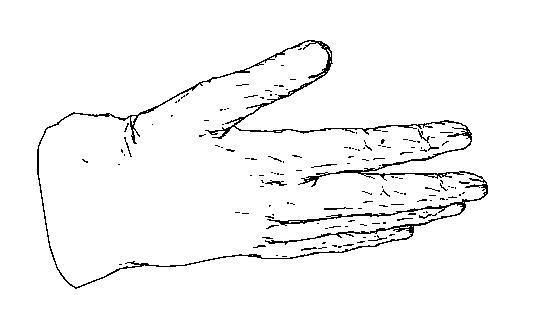
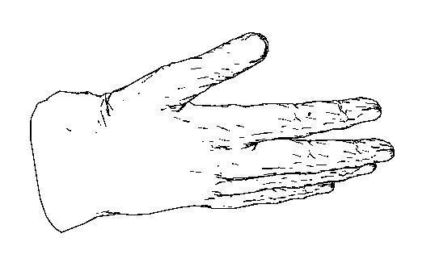
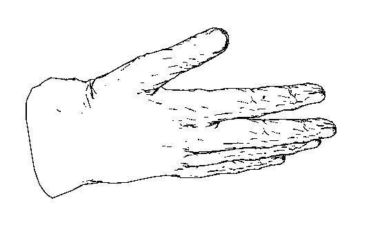

A contour contrast shader specifies where there should be a contour. Like the contour store shader, the contour contrast function has to be specified in the options statement. The parameters of this function specify which difference in depth or surface orientation should cause a contour. For example, to get a contour where the difference in depth is more than 1.0 or the difference in surface normal is more than 60 degrees and between materials, the following contour contrast shader is used
contour contrast "contour_contrast_function_levels" (
"zdelta" 1.0,
"ndelta" 60.0,
"diff_mat" on,
"contrast" on,
"min_level" 1,
"max_level" 1
)
(Be aware that if zdelta or ndelta is set to a very small value, contours will be created also in large regions interior to objects.)
When diff_mat is on, contours are created between different materials. When contrast is on, contours are created where the contrast between colors is larger than the contrast specified in the options within the options statement. The parameters min_level and max_level tell which levels of reflection and layers of semitransparent materials should have contours on them. When both are set to 1, as here, only the outermost materials get contours and no reflections cause contours.
The hands in the figure show the influence the parameters of the contour contrast shader has on where contours are created. Top row (left to right): large zdelta and ndelta give only contours on the outline where the depth difference to the infinitely distant background is large; large ndelta and small zdelta give contours where there is even a small depth difference; small ndelta and zdelta gives contours where there is a small change in depth or orientation. Bottom row: Contours on deeper levels of materials seen through a semitransparent material; contours on reflections on a reflective material, for example the reflection of the thumb is visible in the index finger.

Copyright © 1986-2010 by mental images GmbH